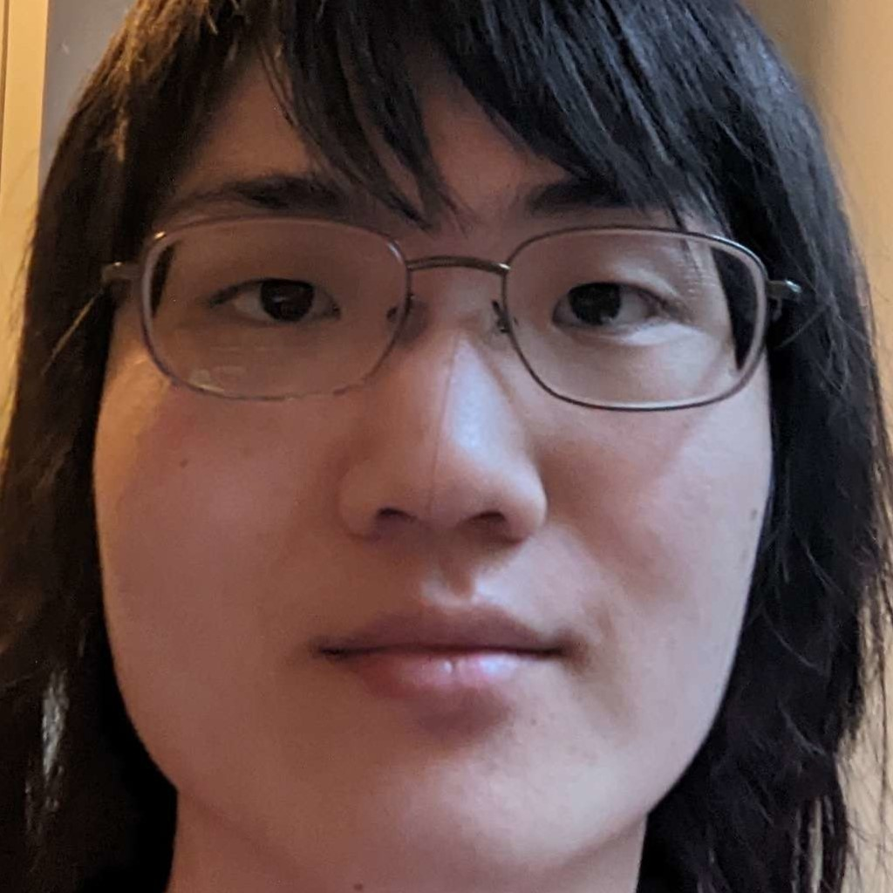

Daniel Taeyoung Sohn is a college student at Michigan State University 2020-2024. He is planning to graduate with a computer science major and game development minor.
Living in Michigan, Daniel has lived in Novi and graduated from it's high school, Novi High School. From there he decided to pursue computer science and game development.
This was fostered from the programming classes such as programming I, II, and AP comp sci offered at Novi High School. For the final AP comp sci project, Daniel decided
to experiment by making a game in the Unity engine. From there, he would keep on using the engine to this day. Whether it was by himself, with siblings, or classmates,
Daniel has continuously worked with and developed with Unity. Some examples are a co-project with his brother, David Sohn, attending game jams at WolverineSoft and
SpartaSoft, taking the game development minor at MSU, and SpartaSoft Studio. From this he has gained experience developing in agile, unorganized, or self planned environments.
Some things Daniel has worked with are:
This website was designed and made by Daniel Sohn